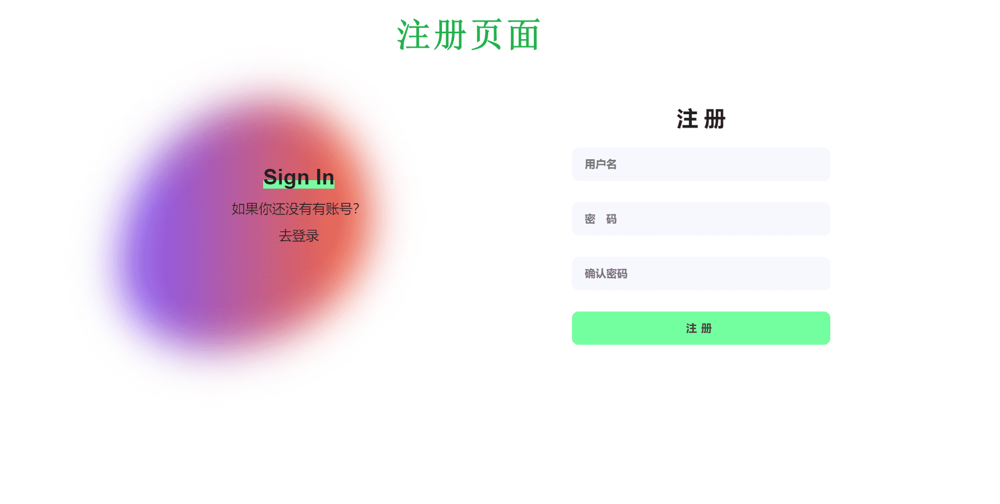
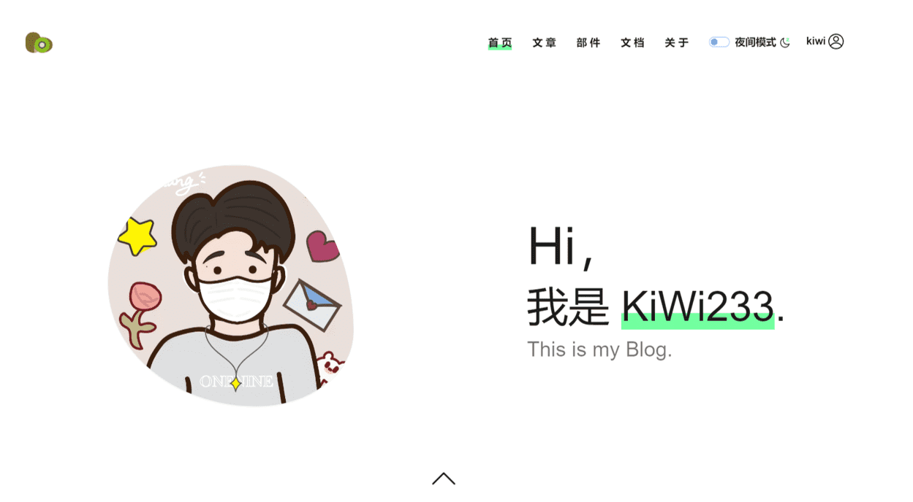

《JavaScript+jQuery+Bootstrap交互式网页设计》课程
实践项目（作品）报告
项目（作品）名称：
KiWi 博客
学生姓名： xxx
学 号： xxxxxx
班级名称： xxxxxx
授课教师： xxx
提交日期： 2022.12.xx
1. 项目（作品）背景说明
1.1 背景
为满足程序员记录知识和简约建站的需求，而制作的个人博客网站，立志于提高用户体验（交互度、流畅度、阅读舒适度等），该网站可供个人记录笔记、日常demo案例记录、分享一些技术文章、以及可修改做为简历网站等等
1.2 系统目标
系统主打简约、流畅、阅读舒适、灵活交互等，解决用户以上问题等
1.3 用户特点
用户多以编程学习人员，需要建立自己的知识存储平台以及个性化平台的需求。
2. 设计说明
网站所有页面均为响应式页面
2.1 登录注册页面
1） 注册：
输入校验
、
本地存储账号密码对象列表

2） 登录功能：
本地存储数据校验账号密码
、
输入校验
、
成功失败的弹窗(防抖处理)
2.2 主页页面

1）顶部导航区：
页面平滑导航、全局夜间模式、登录状态
2）文章轮播图：
自动轮播、无缝连续滚动、PC移动拖动轮播
3）游戏部件：
顶部实时时间、平滑切换概览、右侧点击路由
3） 文档：路由跳转
2.3 文章详情页面：
（全局夜间模式、点赞）
2.4 待办事项页面
（页面使用节流，防止用户多次操作导致数据不一致，交互上大量添加操作和动画的不一致）
1） 顶部输入部分：
内容空的判断弹窗（防抖）、添加事项（本地存储）、清空输入
2） 对事项的增删查改：
本地保存、节流
2.5 井字棋游戏页面
1）井字棋：
下棋功能、判断输赢平、输赢平弹窗、重新开始
2.6 贪吃蛇游戏页面
1）贪吃蛇：
移动和食物功能、撞墙和赢的弹窗、重新开始